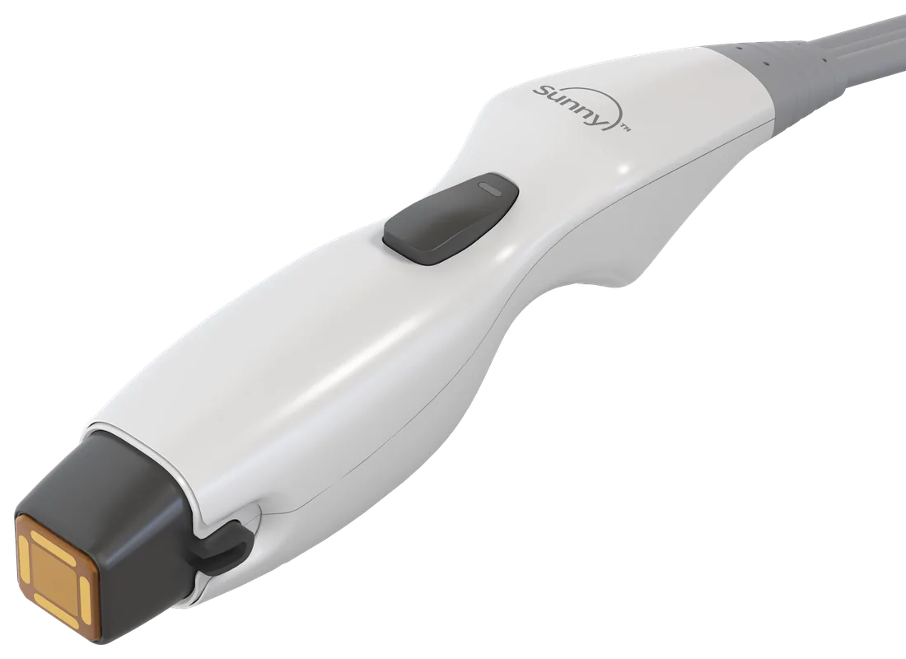
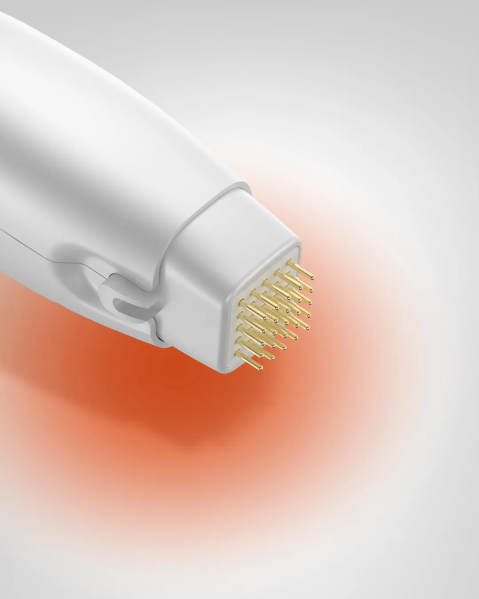

IMCT
Ponteira Quasar
Na ponteira Quasar, do handpiece Pulsar, cada um dos 25 pinos se move de forma independente e se ajusta ao ângulo da pele. O contato é contínuo mesmo em áreas curvas, e a energia chega por igual em todo o contorno.

Sunny · A única tecnologia de radiofrequência com entrega multicamadas · SHENB
Radiofrequência multipolar, programável e com ponteira de 25 pinos independentes, que se ajustam aos contornos da pele. Mais controle na entrega de energia e mais conforto para o seu paciente.
Tecnologia sul-coreana com distribuição oficial e suporte da Aiconiq no Brasil.
A Sunny combina radiofrequência monopolar e bipolar no mesmo equipamento, para trabalhar camadas diferentes da pele na mesma sessão. Além disso, é a única do mercado capaz de entregar as duas ao mesmo tempo, garantindo entrega multicamadas.
O aquecimento controlado do tecido promove a contração imediata das fibras de colágeno e estimula a neocolagênese nas semanas seguintes. É o mecanismo que você já conhece, com mais controle sobre onde e como a energia chega.
Na ponteira Quasar, do handpiece Pulsar, cada um dos 25 pinos se move de forma independente e se ajusta ao ângulo da pele. O contato é contínuo mesmo em áreas curvas, e a energia chega por igual em todo o contorno.

No handpiece Sunny, um spray de gás resfria a epiderme no momento do disparo. A superfície fica protegida, e o paciente tolera melhor o procedimento.

No modo Soft, a energia sobe de forma gradual até o parâmetro definido. No Hard, a entrega é direta. Você escolhe o modo por área e pela sensibilidade de cada paciente.

A energia é dividida em pulsos de 1 a 10 segmentos, com tempo de on-off ajustável, sem perder a energia total do disparo.

Protocolos ajustáveis por área, profundidade e sensibilidade do paciente.

A Sunny é desenvolvida pela SHENB, fabricante sul-coreana de equipamentos médicos estéticos. No Brasil, a distribuição oficial é da Aiconiq, com suporte comercial e clínico e treinamento para a sua equipe.

*O preenchimento do formulário não garante o agendamento de demonstração da tecnologia, sendo necessário passar por um crivo técnico de compatibilidade e agenda.
O Pulsar usa a ponteira Quasar, com 25 pinos independentes que se ajustam ao contorno da pele, e combina RF monopolar e bipolar no mesmo disparo. O Sunny tem resfriamento por spray de gás a cada disparo e os modos Hard e Soft.
Não. A Sunny não tem downtime e permite volta imediata à rotina.
O protocolo é definido pelo profissional, conforme avaliação e indicação.
Sim. Como padrão de qualidade Aiconiq, cada tecnologia conta com treinamento clínico, assistência técnica e suporte de marketing.
Depois do formulário, a equipe da Aiconiq entra em contato para entender a sua clínica e agendar a apresentação técnica.